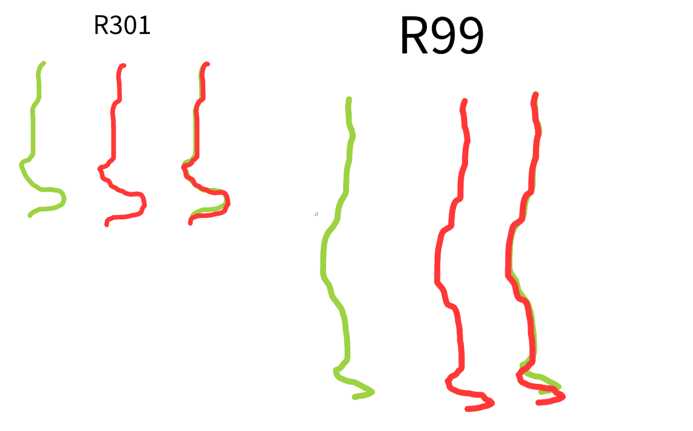

FREQUENTLY ASKED QUESTIONS (FAQ)
Basic steps, assuming you've correctly set your config;
Turn capslock off
Make sure profile is enabled, or make it persistent.
Enable debug and make sure Logitech is detecting buttons.
If mouse buttons are being detected, then you may have trouble with choosing weapons.
If you can change weapons (Log screen shows it attached below), but mouse does not move.
After choosing
Make sure Fire_Key and Aim_Key are set correctly.
Expert Troubleshooting
If even after all it does not work, please update Logitech software & restart the computer then try these without opening the game. There are some cases where BattleEye blocks Logitech LUA, even though you are not playing a BattleEye game.
Have a separate mouse in case of being unable to click anything.
1. Set a weapon and confirm that it is set
2. Set MoveWithoutAiming="on"
3. Set MoveWithoutAimingRequireKey="off"
4. Choose any weapon
5. Click "Fire_Key" (default: 1)
If mouse moves, macro works correctly. Your config or mouse may be faulty.
Try to turn off humanizer and try it for a while (only in firing range for obvious reasons). If it still doesn't move the mouse at all or moves it barely, try to run Logitech as admin and set the priority to High. This is usually caused by CPU usage spikes in game.
If it happens randomly, it is most of the time because of BattleEye even though it is off.
If it only happens on humanizer please turn SlowPC option to on, it reduces the calculation for humanizer and uses less resources overall. The difference between SlowPC and normal is shown below.
Spitfire (Red is slow-mode)
R301-R99 (Red is slow-mode)

You can see that slow-mode is sharper on the edges.
If you are certain that you've installed everything correctly, and tried it on firing range please compare it with YouTube videos in the related game's page. If it is not same it your Logitech software might not be working correctly or CPU usage can not be fully utilized. At worst, please use robotic version.
No, everything is done by Logitech software.
Firstly, enable auto sprint from game settings. This is not a must but easiest button for enabling macro is lshift.
Recoil key and Sprint key should NOT be same, causes issues with 2x-4x scope!
Lastly set these options in the config;
MoveWithoutAiming="on"
MoveWithoutAimingRequireKey="on"
MoveWithoutAimingKey="lshift"
Make sure that there are two macros called AutoFire and Autofire2 in your active profile. If you don't have these, follow installation guide for AutoFire.
Make sure you've set autofire key correctly.
Make sure that the weapon you are using supports autofire.
Check "Weapon Chooser Config" in the LUA file.
You can either directly press mouse/g button to choose weapons or hold "Choose_Key" and press WeaponKeys to change weapon accordingly.
Under "Index Config" you can change weapon list, or you can just change the key.
There are multiple ways for this.
If you are using 2 weapons with switch key. Use "SwitchMove=" parameter to fit your needs. It moves mouse to left&right depending on active weapon.
If you are using 3 or more weapons, the best and only way to
All weapons are divided to 3 indexes, all indexes support up to 6 weapons of your choice.
When you press NextIndexKey, your current index changes and the keys you press now select weapons based off that list.
For example, when you are on Index 2. WeaponKey5 sets the fifth weapon (Weapon2_5) on that Index.
When you first start macro it lists all the Indexes for you and the Key Combinations. Open the lua screen and on the bottom there's a little text area.
G-HUB
LGS with Choose_Key2
You can't really go much higher, however there's one method.
Increase your mouse's DPI, lower in-game sensitivity. It's best to calculate your eDPI before doing so. Which is basically;
DPI * Sensitivity
If you are not using AutoFire key, it may get stuck due to how Logitech interprets mouse clicks. The only way to stop it is to click Mouse1 (Fire_Key) again.
Just assign a macro to other key that acts like one. It's core of the code and for ease of use, so no plan for changes unless a good idea comes by.
In some rare cases it can happen, easiest fix is reload macro. If it happens too often, consider disabling the indicator.